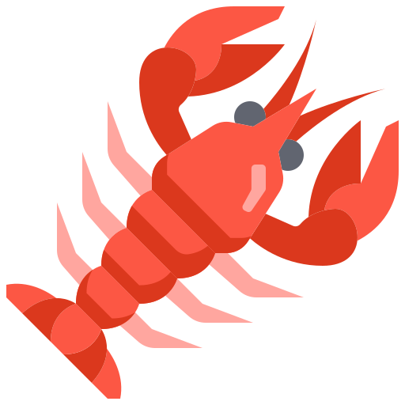

| Home | Crustaceans |
| Crab | Crabs are epic! Crabs are known for having big meaty claws and have tough shells. | |
| Lobster | Lobsters are epic! Lobsters are very similar to crabs, but have a different body structure. They are more narrow, as well as more mobile as they have a fan tail. |  |
| Shrimp | Shrimp are epic! They are very small crustaceans, but are very complex! With over 10 pairs of appendages, they are able to get a lot done! |  |